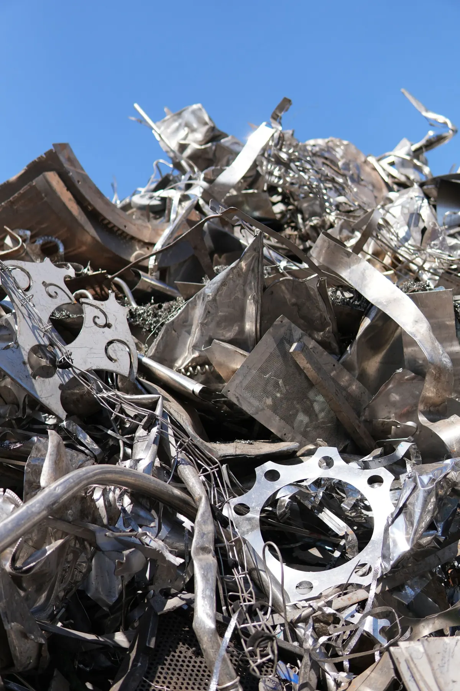

Stainless & brass
Too valuable for the ferrous line
Stainless steel carries nickel and chromium; brass is copper and zinc. Both are worth several times what plain steel is, and both are wasted if they end up in a ferrous bale. Global Steel keeps them separate from the moment they cross the weighbridge.
Stainless steel
Kitchens, equipment, process plant
| Stream in | Typical source |
|---|---|
| Commercial kitchen stainless | Benches, sinks, hoods, shelving from hospitality fit-outs and closures |
| Equipment and appliances | Dishwashers, refrigeration, laundry, medical and lab equipment |
| Process and food plant | Tanks, pipework, vats, conveyors from manufacturing and dairy |
| Architectural stainless | Handrails, balustrades, cladding, street furniture |
Sorted magnetically and by hand from the ferrous stream. Grade families (300-series, 400-series) separated where identifiable; a sample settles the grade.
Brass
Fittings, valves, hardware
| Stream in | Typical source |
|---|---|
| Plumbing brass | Taps, valves, fittings, meters from strip-outs and plumbers |
| Hardware | Locks, hinges, handles, door furniture from demolition and fit-outs |
| Radiators and heat exchangers | Vehicle and industrial radiators (copper–brass) |
| Mixed brass and copper | Hand sorted into brass and copper lots — see copper |
Brass with steel, plastic or chrome attached is stripped where practical; what cannot be separated is graded down and reported.

Supply
Small lots, kept honest
Stainless and brass arrive in smaller quantities than ferrous and take longer to accumulate to a saleable lot. That is why the record matters: a partner who sends three benches and a bag of taps still gets a load statement, and a buyer who takes the lot gets every load behind it.
Lots are offered to Australian non-ferrous buyers first, or containerised with our other metals for export.
Buying or supplying stainless or brass?
Tell us what it is, roughly how much and where. We will come back with what is available or what we can take.